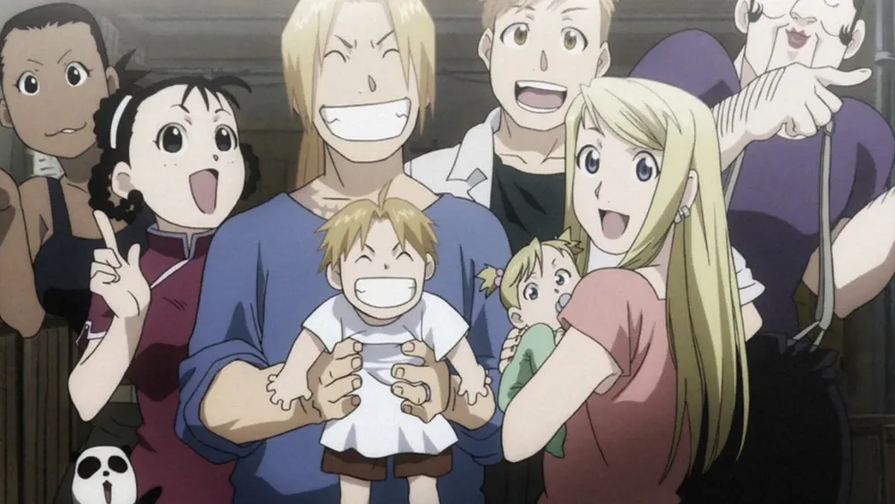
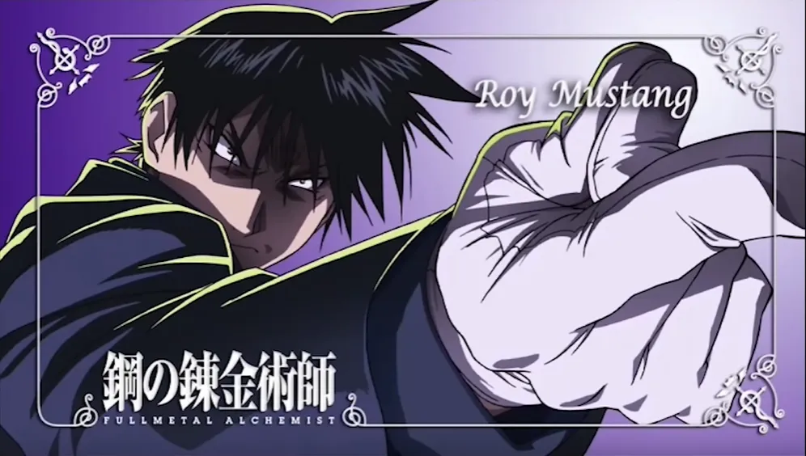

'알폰스 엘릭'.
- 자기 문짝 고물상에 팔아치운 형과는 다르게 진리의 문이 남아있음.
- 통행료 과다지급으로 형보다 더 많은 진리를 봤음.
- 최종장에서도 결국 다리한짝이 없는 형과는 다르게 모든걸 되찾음.
- 형은 연금술 고자가 된거와 달리 여전히 노리스크 박수연금 가능.
- 옆나라 황제랑 절친임.
- 자기나라 군부 실세들과 끈끈하다못해 한가족같은 커넥션 보유

'로이 머스탱' 준장.
- 노리스크 박수연금 가능.
- 더 이상 장갑 안껴도 됨.
- 비오는 날도 상관없어짐.
- 군부 실세임.
- 차기 ㅇㄱㄸ 내정됨.
너무 완결이 완벽해서
후속작은 솔직히 힘들거 같고
스근허이 따끈한 후일담 단편하나만 주세요 소여사님 ㅠㅠㅠ
그 당시 애니라는걸 감안하고 기승전결 완벽한 애니라 생각함 나도 최고로 꼽는게 강연금 다음 진격거